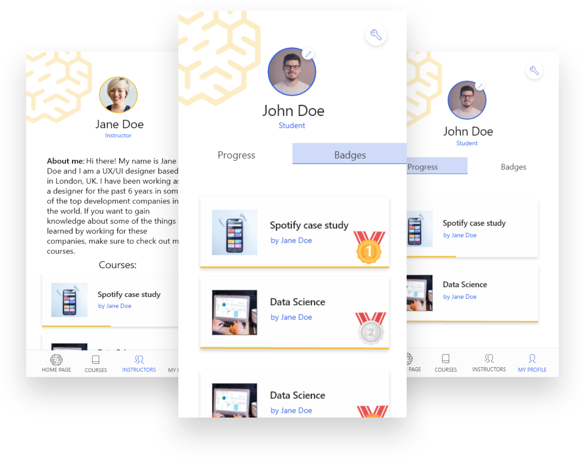

Brainster Microlearning app
- Client name: Brainster
- Project duration: February 2021- March 2021
- My role: Sole designer working throughout the whole project cycle, starting from planning, to research, wireframing, designing and prototyping the app.
The Brainster microlearning app is designed to offer users short, bite-sized information in the format of
case studies, with which they can upgrade their skills in their day-to-day lives. The goal of this app
is to offer lessons that last from five to 15 minutes that users can read while commuting to work or
school, during their break, and pretty much anywhere and anytime they choose.
The biggest challenge of this project is to help users acquire a new skill or upgrade
an
already existing one in a way that will take up very little time in their daily lives, but at the same
time, motivate them to be consistent and not give up in the middle of the process.
The main goal for this project is to simplify the whole process of finding suitable candidates, and create a site where learning partners can specify what kind of people they need for a certain position without having to schedule meetings beforehand. The concept of the site was to include some of Brainster’s alumni on the website in order to give the learning partners a general idea of the students and their qualities. The idea is for the learning partners to take a look at some of the candidates and then schedule a meeting with the Brainster team in order to get recommendations that will be tailored to the company’s needs.
The most popular apps among the surveyed users are Udemy, Coursera, and Duolingo. When it comes to the users’ motivation when completing a course, I noticed that 28.6% of the respondents finish all the courses they take up, while 40% of the remaining respondents finish most of the courses they take up. This number is not bad by itself, but the data I have gathered can help increase the numbers even further. When asked about the things they like the most about the online apps they use, the main response was that they like apps that are easy to use, while they dislike many notifications and reminders, ads, bad UI, and long courses.
User persona:
According to my research, I realised that the main target group are users between 18 and 45
years
who want to use an online app that can help them acquire knowledge in a fast and easy way. That
is
why I created a user persona that really helped me during the design process.
Solving the accessibility problem:
One thing that I have noticed about the apps I was researching, I realised that the apps are not
very accessible for different profiles of users. Given that the microlearning app is based on
reading case studies, it is very important to make it easy to use for people with dyslexia or
visual
impairment. I consulted a defectologist on the matter, and from the advice I gathered, I decided
to include two new features: change the font type and size of the
text,
and listen to the case study. The first feature includes a font called OpenDyslexia3, a font
created
for dyslexic people.
Gamification suggestion:
In order to motivate users to open new lessons everyday, users will receive medals for every
lesson
they complete. For the second phase of the project, after collecting a big number of medals,
users
will get certain badges (Ex. UX Rookie, UX Professional, UX Wizard etc.), and after winning the
final badge, the user will earn a certificate. Another factor that will also motivate users is
the
fact that they can open the current lesson in the timeslot of 24 hours, and after that it will
not
be available until the whole course is done. This will motivate users by triggering their "fear
of
missing out". The users will also be able to see their progress in the courses they are
learning,
which can also help and increase motivation.

User interface:
When it comes to the UI, I decided to use complementary colours because they have the biggest
contrast.
I chose blue as the primary colour because, according to colour psychology, it is associated
with
productivity, stability, and independence. The secondary colour, orange, is associated with
enthusiasm,
friendliness, and warmth. As for the logo, I am currently using a placeholder logo which will be
updated
further in the process by the company’s graphic design team.
This project is very special for me because I had the opportunity to take this project from start to finish and be completely involved in the whole process. I learnt a lot from this project, and it has definitely made me more aware of the importance of user research and how it can help in the design process of the whole app. The research helped me put myself in the users’ shoes even more and gain a greater understanding of the whole process. The process of designing the app has helped me realise how important accessibility is if we, as designers, really want to empower more users to use our products and gain something from them. I am hopeful that this is a topic that will be more and more present in everyday design and that we as a society will strive to be more inclusive towards every single individual.